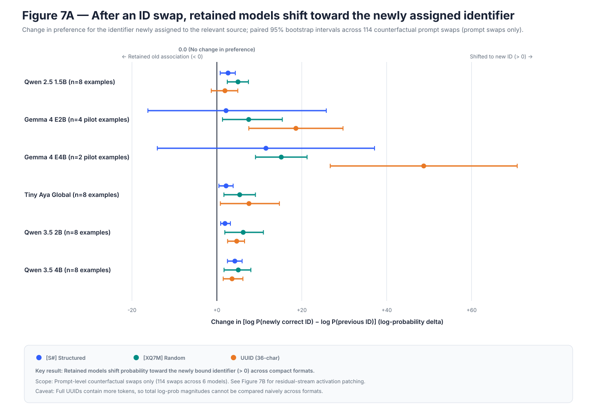
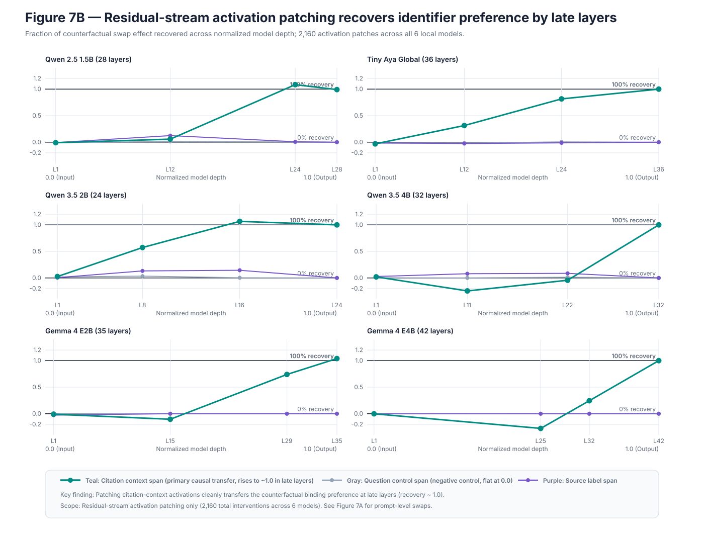

Direct effect
After the swap, probability should move from the formerly correct ID toward the ID now assigned to the relevant passage.
Stage 07 · causal mechanism
Counterfactual prompts swap the IDs attached to a relevant passage and distractor while holding every fact fixed. Residual-stream patches then test where that changed citation state becomes transferable.
Result in one line. All six local architectures rebind toward the identifier newly assigned to the relevant source; exact citation reconstruction becomes transferable late at model-specific depths.
The intervention permutes only which identifier is attached to the gold source. Facts, question, distractors, answer, and the set of available IDs remain unchanged.
After the swap, probability should move from the formerly correct ID toward the ID now assigned to the relevant passage.
Transplanting a donor residual state should reproduce part of the prompt-level counterfactual at a causally relevant layer and position.
Exchange the relevant source ID with one distractor ID under structured, compact-random, and UUID formats.
Compute change in log probability of the newly correct ID relative to the previous ID.
Move residual states from donor to recipient at sampled layers and token trajectories.
Report recovery as patch effect divided by the model’s own direct swap effect.
| Model | n | [S1] | [XQ7M] | UUID | Decision |
|---|---|---|---|---|---|
| Qwen 2.5 1.5B | 8 | 2.63 | 4.98 | 1.90 | correct rebinding |
| Gemma E2B | 8 | 8.32 | 5.18 | 14.63 | correct rebinding |
| Gemma E4B | 8 | 37.41 | 50.91 | 48.30 | correct rebinding |
| Tiny Aya | 8 | 2.17 | 5.38 | 7.56 | correct rebinding |
| Qwen 3.5 2B | 8 | 1.91 | 6.20 | 4.67 | correct rebinding |
| Qwen 3.5 4B | 8 | 4.23 | 5.04 | 3.58 | correct rebinding |
positive model-level direction
eight semantic examples per checkpoint
full citation state transfers


Final-layer patches transfer the prompt-swap effect in every model, while early controls are near zero. Qwen checkpoints and Tiny Aya expose transferable states in late intermediate layers; Gemma models reconstruct the citation state closer to the output. Single source-label or fact-span endpoints are not sufficient.
Source-to-identifier binding causally affects the citation distribution across all six local architectures, while onset layer and trajectory remain model-specific.
Every local checkpoint now contributes eight semantic examples, 24 counterfactual prompt swaps, and 360 residual-stream patches: 384 interventions per model and 2,304 cohort-wide. Prompt swaps and activation patches remain separate units, and full UUID sequence log probabilities differ in token count from compact IDs.
The patching results do not identify a single “UUID circuit.” Component-level attention-head versus MLP interventions, independent task replication, and broader checkpoints remain open.
results/analysis/stage7_cross_model_synthesis.mdresults/analysis/stage7_*.mdresults/processed/stage7_*.jsonresults/interventions/stage7_*/scripts/analyze_stage7_cross_model.py